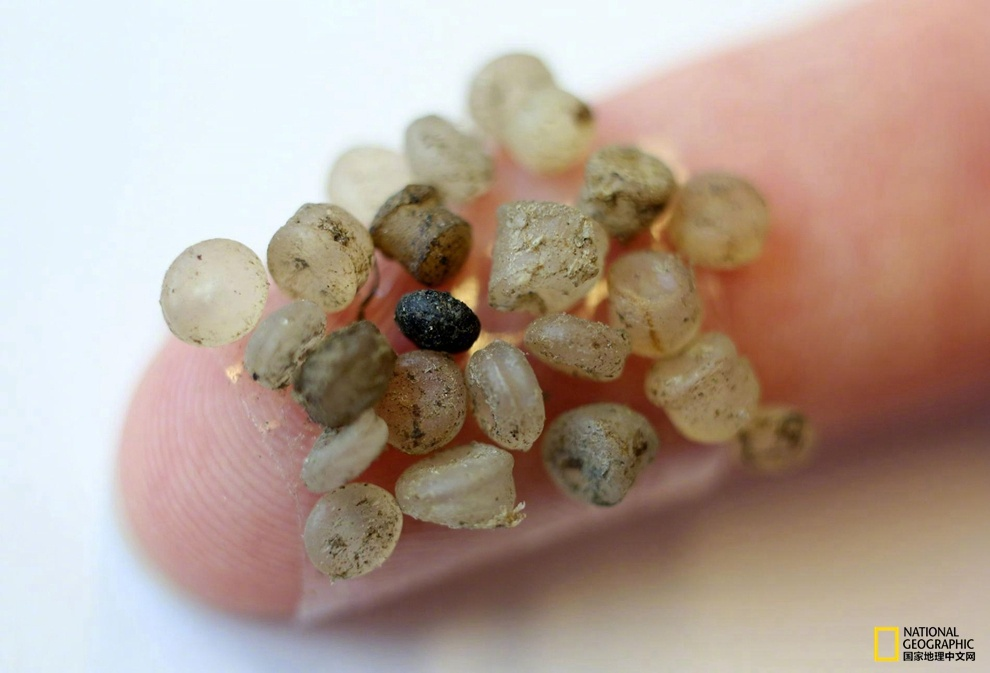

看过之后我觉得全身都不舒服了……@美国国家地理:早些年，研究者就在鸟类、鱼类以及鲸鱼体内发现了塑料微粒，而这次，研究者#首次在人类体内发现塑料微粒# ，印证了人们一直以来的担忧 此次试验共邀请了8名参与者，研究结果显示，他们每个人的粪便样本中都有塑料微粒；而有些塑料纳米纤维比人体毛发宽度的1/5还小，那它们能否进入我们的血液、淋巴系统甚至肝脏中呢？迄今为止，这些都还是未解之谜。→网页链接
继续上篇说。我们和伊朗同事聊起他们中学的历史学什么。他说他们学的第一个人物是摩西。摩西？！哦，就是那个圣经和古兰经都有的人物。然后历史有两条线，这一条线和波斯线。两条线在Cyrus那里汇合，因为Cyrus把犹太人从巴比伦手中解放出来。真不愧是“伊斯兰共和国”，把他们灿烂辉煌的古波斯文明掺杂在古兰经（和圣经基本一样）里讲……（和上条一样，忍不住又有一条微博关于伊朗同事……）
前几天我们的伊朗同事惊讶于我们在中国的中学历史课上学过马丁.路德。我们觉得不能理解，他不是宗教改革的重要人物吗？宗教改革、文艺复兴、地理大发现……都是世界历史重要事件啊？伊朗同事觉得不可思议，中国竟然在中学学世界历史。他说他们伊朗就不学。这回轮到我们惊讶了。问他为什么，他说因为“他们觉得伊朗是世界的中心”。可是，为什么？为什么伊朗人会觉得他们是世界的中心？！即使中国人喜欢拿一个莫名的四大文明古国说事，中国也只是四大之一啊，也不觉得我们是世界的中心啊。（我知道我讲这个伊朗同事的微博实在有点多，但他太有料了我实在是忍不住……）
连美国媒体自己也惊讶于沙特暗杀事件在新闻热点上持续时间之长：“就算是特朗普在街上拿枪打死一个人，大家还是会继续谈论沙特暗杀案”。这就和当年马航370一样让人不可思议，已经难以用新闻的逻辑结束了。也许就是事件本身的悬疑性，让大家像追推理小说的连续剧一样追下去。
 此次试验共邀请了8名参与者，研究结果显示，他们每个人的粪便样本中都有塑料微粒；而有些塑料纳米纤维比人体毛发宽度的1/5还小，那它们能否进入我们的血液、淋巴系统甚至肝脏中呢？迄今为止，这些都还是未解之谜。→
此次试验共邀请了8名参与者，研究结果显示，他们每个人的粪便样本中都有塑料微粒；而有些塑料纳米纤维比人体毛发宽度的1/5还小，那它们能否进入我们的血液、淋巴系统甚至肝脏中呢？迄今为止，这些都还是未解之谜。→ 网页链接
网页链接